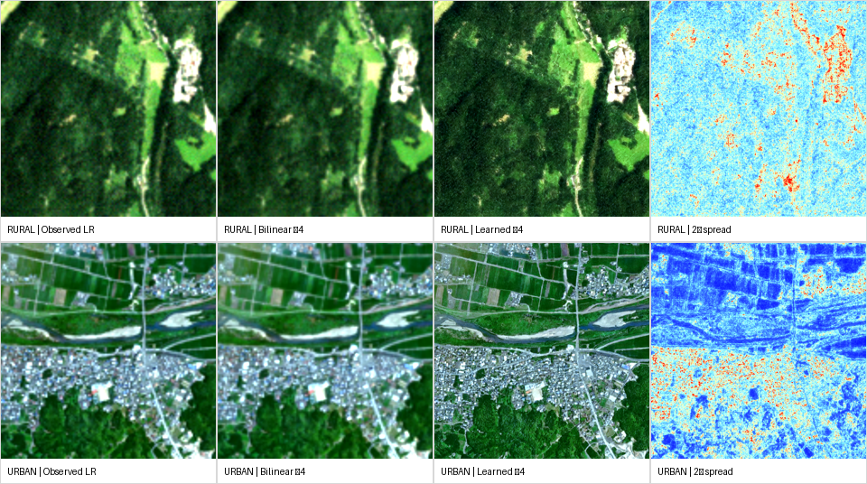
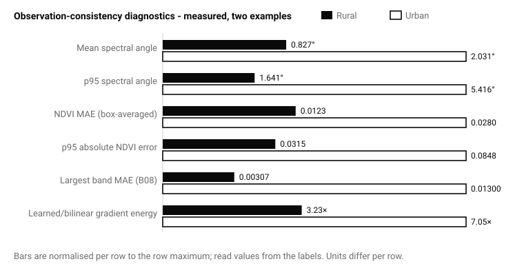
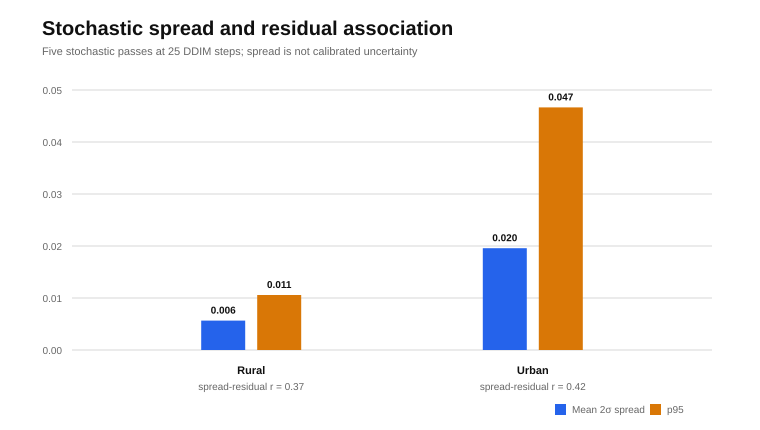

Abstract
Sharp satellite imagery is not necessarily accurate satellite imagery. This note evaluates a four-band ×4 Sentinel-2 latent-diffusion release without pretending that its two bundled examples provide high-resolution ground truth. The analysis measures whether box-averaged output remains consistent with the observed 10 m input, how spectral angle and NDVI change, how strongly learned output departs from bilinear interpolation, and where five stochastic passes disagree. The urban example exhibits larger drift than the rural example: mean spectral angle is 2.03° versus 0.83°, p95 absolute NDVI error is 0.085 versus 0.031, and high-frequency gradient energy is 7.05× versus 3.23× the bilinear baseline. These values diagnose behaviour on two examples. They do not establish 2.5 m resolving power, reconstruction accuracy, calibrated uncertainty or population-level performance.
1. Super-resolution is an inverse problem
A low-resolution observation can be represented as:
Here x is the unknown high-resolution scene, D is the sensor and sampling process, n is noise and model mismatch, and fθ produces an estimate x̂. The inverse is non-unique: multiple high-resolution scenes can map to nearly the same observation.
A generative model can therefore add plausible high-frequency structure without recovering what the sensor observed. Visual sharpness is evidence of model behaviour, not evidence of physical truth.
Why PSNR and SSIM are unavailable here
PSNR, SSIM and ERGAS require a valid co-registered high-resolution reference under a declared radiometric and spatial contract. The bundled examples contain only four-band Sentinel-2 inputs. Computing those metrics against interpolation or against the input itself would answer the wrong scientific question. This article reports no PSNR, SSIM, ERGAS or true 2.5 m accuracy.
2. Evidence contract
| Inputs | Two bundled 128×128 Sentinel-2 examples: rural and urban |
|---|---|
| Bands | B04 red, B03 green, B02 blue and B08 near-infrared |
| Output | Four-band 512×512 model product on a nominal 2.5 m grid |
| Displayed learned output | Latent diffusion, 100 DDIM steps, η = 0.95, followed by per-band histogram matching |
| Spread experiment | Five 25-step passes, η = 0.0, independently seeded initial latents |
| Baseline | Bilinear ×4 interpolation |
| High-resolution truth | None |
| Scope | Case study and observation-consistency audit, not a dataset benchmark |
The output array has four times the linear sampling frequency in each axis, corresponding to sixteen times as many array samples per unit area and a nominal 2.5 m sample spacing if the input is on a 10 m grid. This does not establish native 2.5 m information, a 2.5 m modulation transfer function or 2.5 m resolving capability.

3. Diagnostic protocol
Observation consistency
Without high-resolution truth, the first test asks whether a simple declared degradation of the generated product reconstructs the observation:
P4 is 4×4 box averaging. It is not a Sentinel-2 MTF or PSF model, so this metric tests array-level consistency only. Figure 2 reports max_b L_obs,b and identifies the corresponding band.
Spectral angle
For each low-grid pixel, the angle between observed and downsampled four-band vectors is:
SAM measures directional spectral change and is less sensitive to uniform magnitude scaling. It does not establish high-resolution spectral correctness.
NDVI drift
ΔNDVI = NDVI(x̂↓) − NDVI(y)
Learned detail relative to interpolation
Residual detail is defined against bilinear interpolation U:
Here E∇(z) is the sum of the mean squared horizontal and vertical first differences over all four bands. A ratio above one means the learned array has greater first-difference energy than bilinear interpolation; this can reflect edges, texture, contrast, noise or artefacts and does not establish greater accuracy.
4. Measured case results

What can be concluded
The learned outputs have substantially greater first-difference energy than bilinear interpolation, especially in the urban case. Their box-averaged spectra remain closer to the input in the rural example than in the urban example. B08 has the largest consistency error in both cases. These observations identify where independent high-resolution validation is most necessary.
What cannot be concluded
The added roads, roofs, field boundaries and textures cannot be labelled recovered or hallucinated from these two examples alone. No independent reference establishes their location, radiometry or effective spatial resolution. Higher gradient energy must therefore be interpreted as model-added structure, not recovered truth.
5. Stochastic spread is not calibrated uncertainty
Five 25-step outputs with η = 0.0 and independently seeded initial latents were generated for each case. The displayed learned output instead uses 100 steps and η = 0.95, so spread characterises a different sampler configuration, not uncertainty of the displayed product. At pixel i, spread is twice the Bessel-corrected sample standard deviation across the five outputs, averaged across four bands:
This measures sampler disagreement. It is not a confidence interval because coverage against truth has not been tested.

What calibration would require
Given a valid high-resolution target and nominal interval Ii(q), empirical coverage would be:
Coverage must be reported with interval width and risk-coverage curves. Otherwise, broad intervals can appear reliable while remaining operationally useless.
6. Framework for a full evaluation
A publishable super-resolution claim requires a co-registered reference campaign and deterministic baselines under one spatial and radiometric contract.
| Question | Required evidence |
|---|---|
| Does the model improve reconstruction? | Nearest, bilinear and bicubic baselines against independent HR truth; PSNR, SSIM, SAM and ERGAS |
| Does it preserve physical observables? | Band bias, spectral angle, NDVI error and sensor-aware degradation consistency |
| Is added detail spatially correct? | Edge precision/recall, registration tolerance and frequency-spectrum comparison |
| Does it help another task? | Frozen downstream segmentation or detection model evaluated on LR, interpolation, learned SR and HR reference |
| Is uncertainty useful? | Coverage, interval width, class-conditional calibration and risk-coverage curves |
| Does it generalise? | Region, season, land-cover and sensor-held-out evaluation with repeated samples |
Sensor-aware degradation
Box averaging is insufficient for a physical validation. A stronger operator should model the band-specific point-spread function, modulation transfer function, sampling lattice, spectral response and registration uncertainty:
Here hb is a band-specific PSF and Sb is the sampling operator. Model selection against an incorrect degradation can reward outputs that satisfy software assumptions rather than sensor physics.
7. Limitations
- Only two bundled examples are evaluated; neither includes acquisition metadata or independent high-resolution truth.
- Box averaging is not a Sentinel-2 MTF/PSF model.
- Per-band histogram matching alters the generated radiometric distribution and affects consistency metrics.
- The learned output uses 100 DDIM steps with η = 0.95; spread uses five 25-step passes with η = 0.0 and therefore characterises a different sampler configuration.
- Five stochastic samples are insufficient for stable tail or coverage estimates.
- The spread-residual correlation compares sampler disagreement with deviation from bilinear interpolation, not error against truth.
- No downstream task, registration study, cloud stratification or geographic holdout is available.
Reproducibility statement
The reported run used source checkout 04490332ea0efda08fe1c2b1a4b9080705ca3ceb, configuration SHA-256 0f9409ffc1d4c1fcf874732fee3b12abd5c2bf82cd7b76c2e47ada3e4451c9e7 and checkpoint SHA-256 e2621e3912eb7c14867c3d20c9029607ba941be8e166dc09621860fcac27dc3a. The evaluation script verifies that the imported s2sr package resolves under the declared checkout. Raw metrics, evaluation code and figure-generation code are published with this note.
The bundled values are DN-like and were divided by 10,000. Acquisition metadata are absent, so the applicable Sentinel-2 processing baseline and any prior or required BOA additive-offset correction cannot be independently verified. The reported radiometric diagnostics are conditional on the zero-offset interpretation.
The artifact evaluated here belongs to the toolkit’s initial four-band ×4 release line (2.5 m, July 2026), identified by the hashes above. On 3 August 2026 the toolkit shipped v1.1.0 on both release lines. The 2.5 m line added a ten-band product, metadata-driven Sentinel-2 preprocessing, and fixes to DDIM schedule indexing and output geotransform scaling; the ~1.67 m WorldStrat line added an all-bands cascade (a self-supervised Wald-protocol ×2 sharpener for the 20 m bands plus ×6 detail injection with an MTF-matched PSF), an optional SEN2VENuS real-high-resolution red-edge supervision path, training quality gates and a low-resolution–consistency evaluation, with its ×6 diffusion training campaign still in progress and trained checkpoints deferred to a later release. Because the schedule-indexing fix changes the sampler, every diagnostic in this note characterises the v1.0.0-era checkpoint and configuration only and must be re-measured before being quoted against v1.1.0 outputs. The same observation-consistency discipline is now being extended to cross-band SAR super-resolution (Sentinel-1 C-band toward Capella X-band) in a separate framework, where SAR-physics-aware diagnostics replace these optical ones.